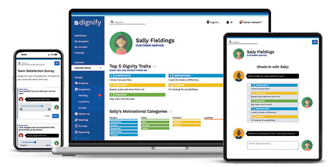
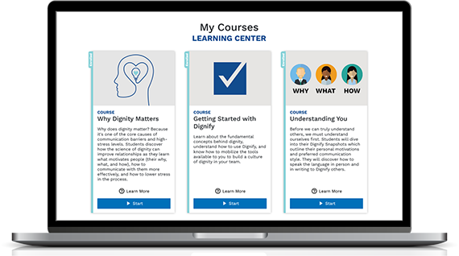

ON THE FIELD
Coaches
- See the individual behind the athlete
- Make room for different motivators
- Build trust beyond the scoreboard
- Bring the team into the conversation
A better understanding of yourself. A better connection with others.
Take Your Snapshot ↗MORE UNDERSTANDING. MORE POSSIBILITY.
Great relationships begin with understanding. Discover what makes you—and the people around you—uniquely human.
Take Your Snapshot ↗A DIFFERENT WAY FORWARD
Get curious about what drives the person in front of you.
Find a shared language for how you prefer to connect.
See individual strengths as a starting point for growth.
Build trust through the conversations that matter.
PUT UNDERSTANDING TO WORK
See what Dignify could mean for your people.
DIFFERENT PEOPLE. SHARED POTENTIAL.
On the field, at work, and around the kitchen table.
A stronger connection starts with seeing each other.
ON THE FIELD
IN THE WORKPLACE
IN EVERYDAY LIFE
COACHING / THE HUMAN CONNECTION
Work with Dignify coaches and facilitators to develop leadership and communication.
Explore coaching ↗
TECHNOLOGY / UNDERSTANDING IN ACTION
Bring Dignify’s Culture Operating System into daily practice with its technology.
Explore the technology ↗CURRICULUM / LEARNING THAT MOVES WITH YOU
Dignify’s Academy offers learning for leaders at every level.
Explore the curriculum ↗
THE CULTURE OPERATING SYSTEM
Coaching, curriculum, and technology come together in Dignify’s Culture Operating System.
Build self-awareness and clarity of purpose.
Develop connection and shared direction.
Put priorities into action and recognize progress.
Excerpts from Dignify’s homepage · Client experiences with Dignify
THIS IS WHAT WE DO
A system rooted in dignity. Built for stronger relationships, better communication, and leadership that grows.